1. Project Overview
BloodConnect is a full-stack blood donation coordination web application developed using Next.js, React, MongoDB and Mongoose.
The application connects donors with hospitals that need blood. Hospitals can create blood requests, and eligible donors can view and respond to matching requests.
The system also provides authentication, donor matching, notifications, appointment scheduling, donation completion tracking and history management.
Main Users
- Donor: Can register, maintain availability, view blood requests, respond to requests, receive notifications and view donation history.
- Hospital: Can register, create blood requests, view matching donors, schedule appointments, manage appointments and view history.
Technology Architecture
BloodConnect is implemented as a full-stack Next.js application. The frontend uses React components and the backend functionality is implemented using Next.js Route Handlers.
The application communicates with MongoDB through Mongoose. Authentication is handled using hashed passwords and signed HTTP-only session cookies.
2. Technology Stack
| Technology | Purpose |
|---|---|
| Next.js | Used to build the full-stack web application, routing and backend API Route Handlers. |
| React | Used to create interactive user interface components. |
| JavaScript | Used for application logic and frontend/backend functionality. |
| MongoDB | Used as the database for storing users, profiles, requests, appointments and notifications. |
| Mongoose | Used to define database schemas and communicate with MongoDB. |
| bcryptjs | Used to hash passwords before storing them. |
| HTML | Used as the structure for this project documentation. |
| CSS | Used for styling the BloodConnect interface and this documentation. |
3. Landing Page
3.1 Landing Page - Screen 1
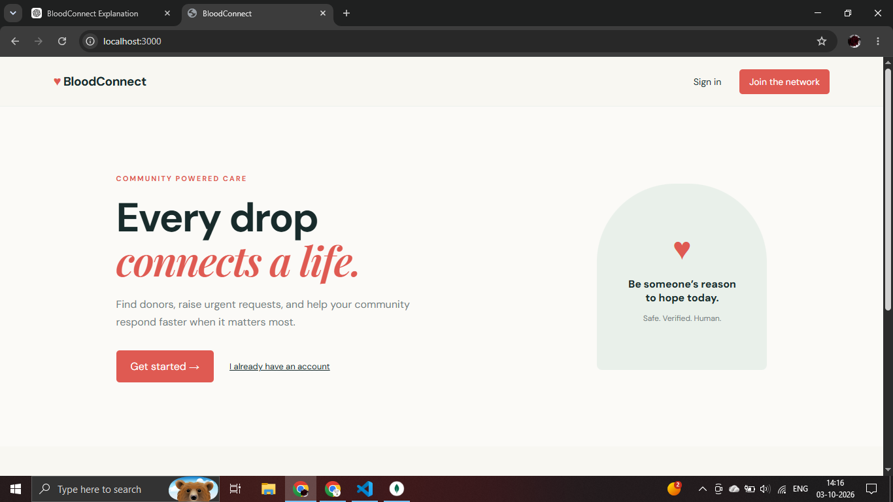
Purpose
The landing page is the first screen displayed when a user visits BloodConnect. It introduces the purpose of the application and provides navigation to the main authentication pages.
How It Works
The user can explore the information provided on the landing page and navigate to the registration or login page using the available buttons and navigation links.
Technical Flow
Browser → Next.js Page → React Components → CSS → Landing Page UI
Concepts Used
- Next.js App Router
- React Components
- Navigation
- HTML Structure
- CSS Styling
3.2 Landing Page - Screen 2
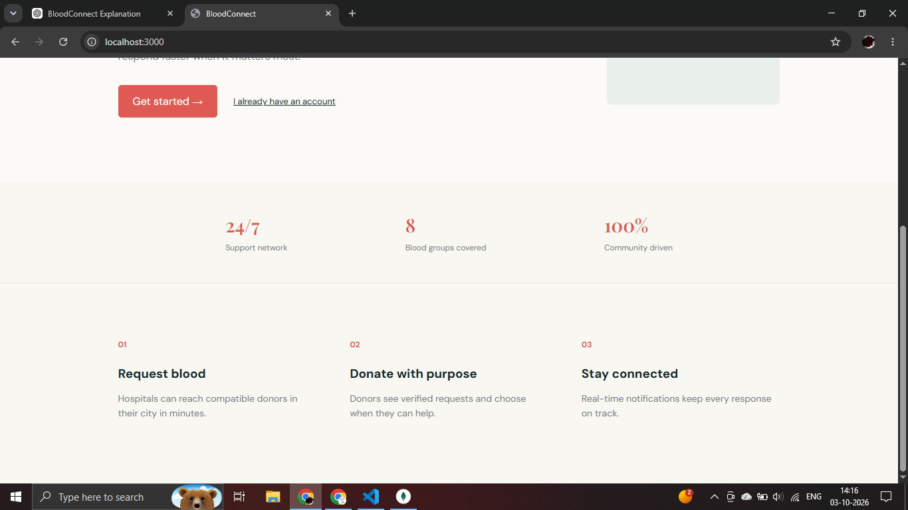
Purpose
This screen presents additional information about the BloodConnect system and guides users toward using the platform.
How It Works
The user can interact with the navigation elements and move to the registration or login process.
Concepts Used
- React Components
- Next.js Routing
- CSS
- Responsive Design
4. Create Account / Registration
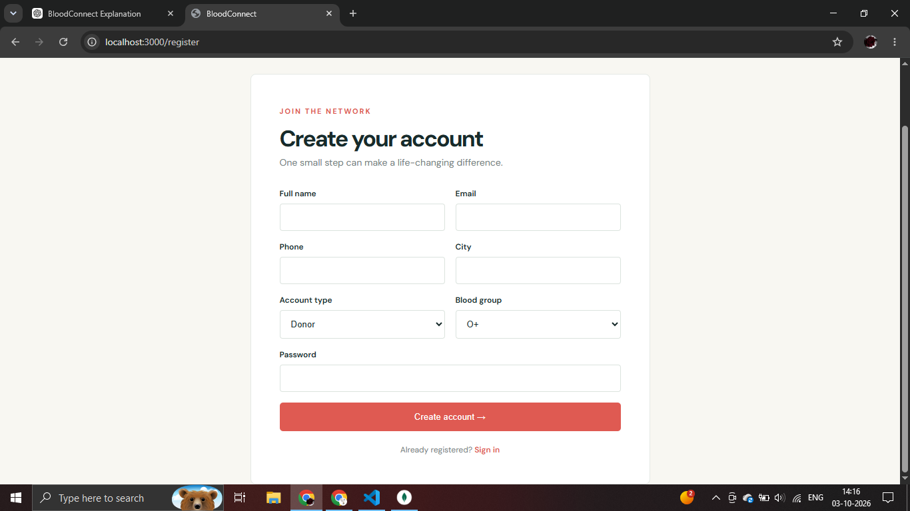
Purpose
The registration page allows a new user to create a BloodConnect account. The user can register according to their role, such as donor or hospital.
How It Works
The user enters the required registration information. React manages the form values using component state. When the form is submitted, the frontend sends the information to the Next.js registration API.
The backend validates the submitted information, checks whether the account already exists, hashes the password and stores the user information in MongoDB.
Technical Flow
Registration Form → React State → fetch() → POST /api/auth/register → Validation → Password Hashing → Mongoose → MongoDB
Concepts Used
- React useState
- Controlled Forms
- Event Handling
- fetch()
- POST API
- Next.js Route Handler
- Server-side Validation
- bcryptjs
- MongoDB
- Mongoose
Important Note
OTP generation functionality exists in the registration backend, but OTP verification has not been implemented in the current version of the project.
5. Sign In / Login
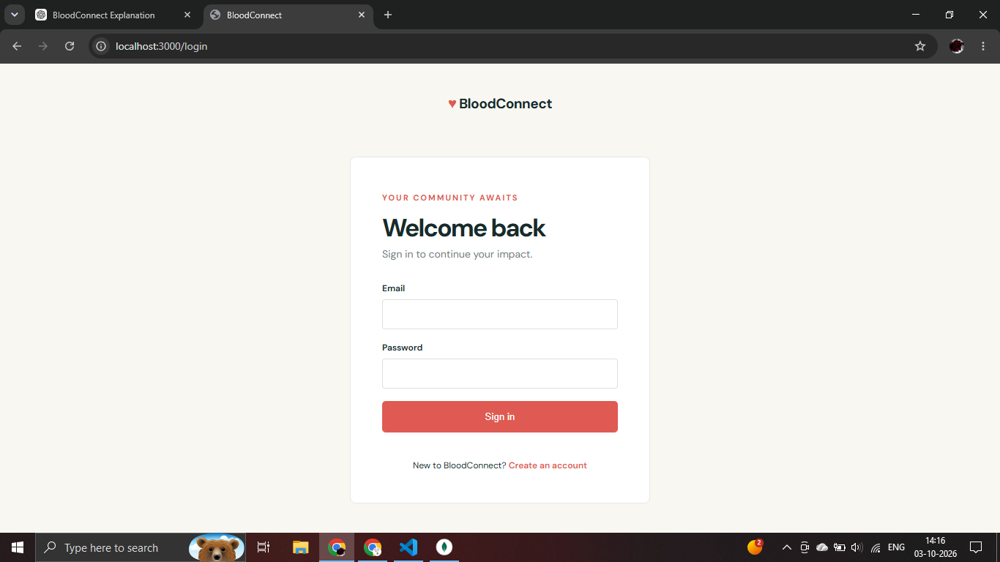
Purpose
The login page allows an existing BloodConnect user to access their account.
How It Works
The user enters their email address and password. The frontend sends the credentials to the login API.
The backend finds the user in MongoDB and compares the entered password with the stored hashed password using bcryptjs.
After successful authentication, the server creates a signed HTTP-only session cookie. The user can then access the appropriate dashboard.
Technical Flow
Login Form → fetch() → POST /api/auth/login → Find User → bcrypt Password Verification → Create Session → HTTP-only Cookie → Dashboard
Concepts Used
- Authentication
- bcryptjs
- HTTP-only Cookies
- Sessions
- fetch()
- Next.js Route Handlers
- MongoDB
6. Hospital Module
The hospital module allows hospitals to create and manage blood requests and coordinate with donors.
6.1 Hospital Dashboard - Screen 1
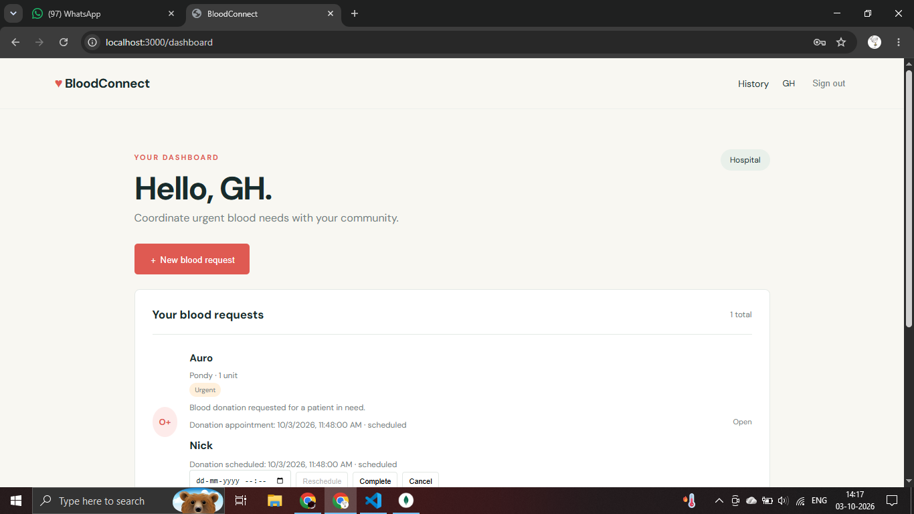
Purpose
The hospital dashboard provides the hospital with an overview of its blood donation activities and requests.
How It Works
After login, the hospital dashboard loads the required information from the backend APIs and displays the relevant information.
Technical Flow
Dashboard → fetch() → Next.js API → Authentication → MongoDB → JSON Response → Dashboard UI
Concepts Used
- React Components
- useEffect
- fetch()
- Authentication
- MongoDB
- Mongoose
6.2 Hospital Dashboard - Screen 2
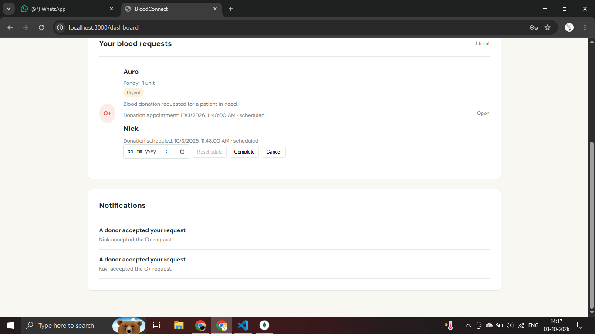
Purpose
This screen displays additional hospital information, requests or actions available to the hospital.
Concepts Used
- React Components
- Conditional Rendering
- API Data Fetching
- JavaScript Array Methods
- CSS
6.3 Create New Blood Request
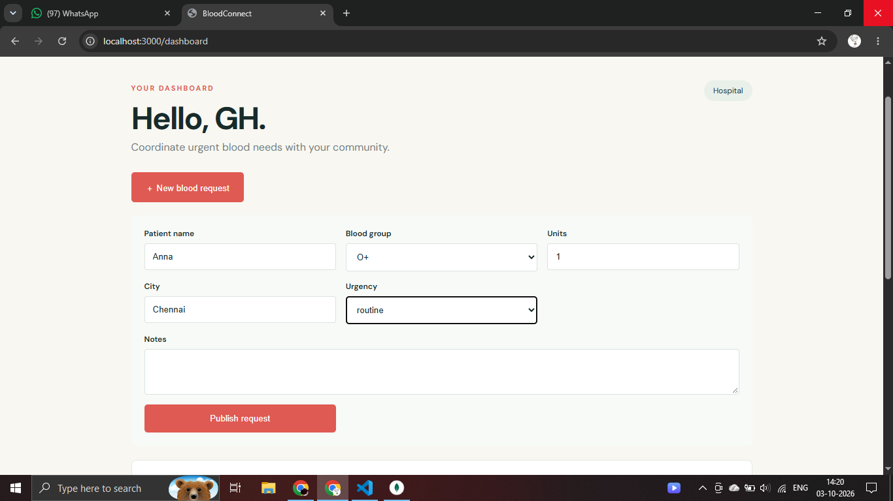
Purpose
This page allows a hospital to create a new blood requirement.
Information Entered
- Patient information
- Blood group
- Number of units required
- City
- Urgency
- Additional notes
How It Works
The hospital fills the form and submits the blood request. The frontend sends the information to the request API.
The backend verifies that the logged-in user is a hospital, validates the information and stores the request in MongoDB.
Technical Flow
Form → React State → fetch() → POST /api/requests → Authentication → Authorization → Validation → Mongoose → MongoDB
Concepts Used
- useState
- Controlled Form
- POST API
- Authentication
- Authorization
- Validation
- Mongoose
- MongoDB
6.4 New Blood Request Displayed
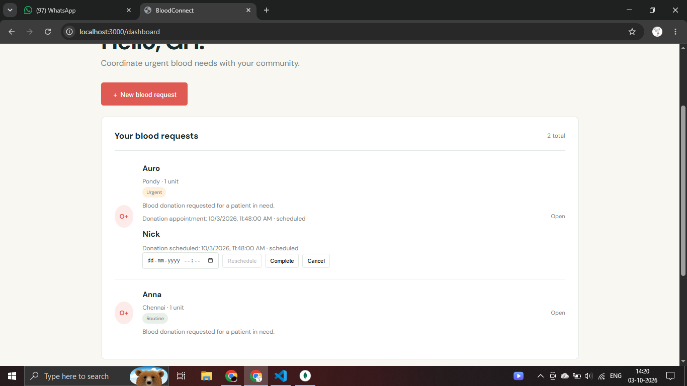
Purpose
After creation, the blood request is displayed in the hospital interface so that the hospital can monitor the request.
How It Works
The frontend retrieves blood requests from the backend and displays them using React components.
Technical Flow
Hospital Dashboard → GET /api/requests → Authentication → Mongoose → MongoDB → Blood Request Data → React UI
Concepts Used
- GET API
- fetch()
- useEffect
- Array Mapping
- React Components
- MongoDB
6.5 Hospital History
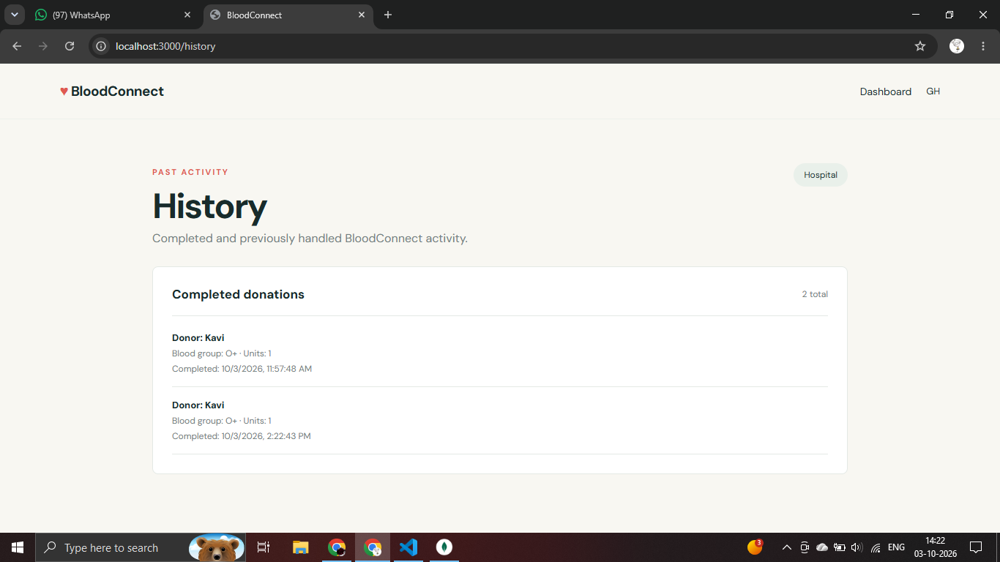
Purpose
The history page allows the hospital to view previous blood requests and completed activities.
How It Works
Historical request and appointment information is retrieved from the available APIs and displayed to the hospital.
Concepts Used
- GET API
- Filtering
- Mapping
- React Components
- MongoDB
7. Donor Matching and Blood Request Flow
7.1 Donor Dashboard - Screen 1
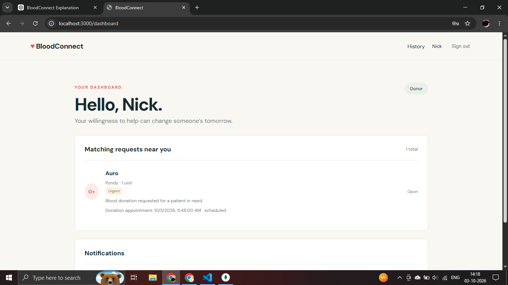
Purpose
The donor dashboard allows donors to view their blood donation activities and available requests.
How It Works
When the donor opens the dashboard, the application retrieves relevant blood requests and donor information from the backend.
Concepts Used
- React Components
- useEffect
- fetch()
- API Calls
- Conditional Rendering
7.2 Donor Dashboard - Screen 2
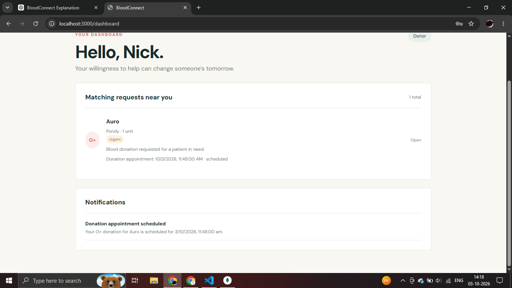
Purpose
This screen displays additional donor information and available actions.
Concepts Used
- React State
- API Data
- Conditional Rendering
- JavaScript
- CSS
7.3 Blood Request Received by Donor
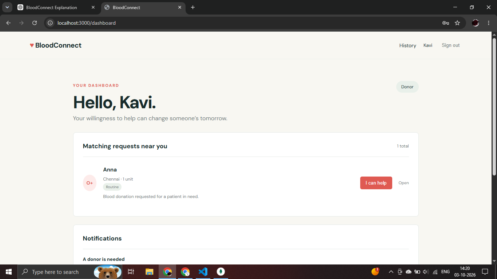
Purpose
This screen shows a blood request that matches the donor's information.
Matching Logic
The system searches for donors based on the required blood group, normalized city and donor availability.
Only donors satisfying the required matching conditions are considered for the request.
Technical Flow
Blood Request Created → Backend Searches Donors → Blood Group Match → City Match → Availability Check → Matching Donors Identified
Concepts Used
- Database Query
- Filtering
- Blood Group Matching
- City Normalization
- Availability Checking
- Mongoose Queries
7.4 Blood Request Notification
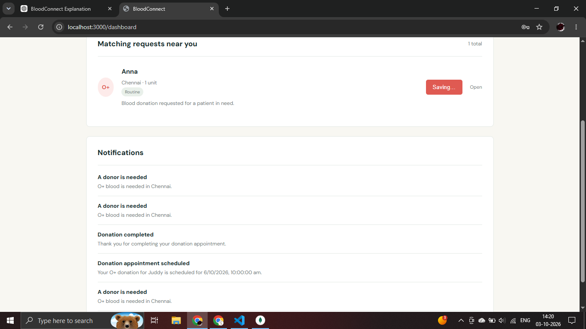
Purpose
The notification informs the donor that a blood request matching their information is available.
How It Works
When a matching donor is found, the backend creates a notification record in MongoDB. The donor dashboard retrieves these notifications and displays them.
Technical Flow
Matching Donor → Create Notification → MongoDB → GET /api/notifications → Donor UI
Concepts Used
- Notifications
- MongoDB
- Mongoose
- GET API
- React Rendering
8. Donor Accepts Blood Request
8.1 Donor Response
When the donor decides to help, the donor selects the option to respond to the blood request.
Technical Flow
Donor Clicks "I Can Help" → POST /api/requests/[id]/respond → Authentication → Donor Authorization → Request Validation → Add Donor to Responders → Create Hospital Notification
Concepts Used
- Dynamic API Route
- POST Request
- Authentication
- Authorization
- MongoDB Update
- Embedded Subdocuments
- Notifications
8.2 Hospital Receives Accepted Donor Notification
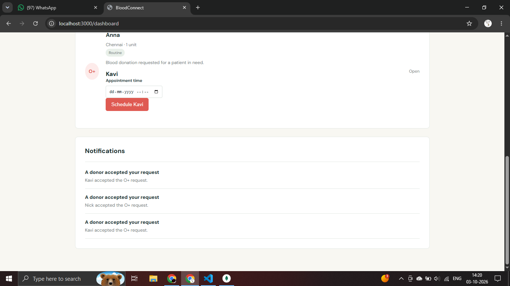
Purpose
The hospital receives a notification when a donor accepts its blood request.
How It Works
After the donor responds, the backend adds the donor information to the request's responders list and creates a notification for the hospital.
Technical Flow
Donor Response → BloodRequest Updated → Responder Added → Hospital Notification Created → Hospital Dashboard
Concepts Used
- MongoDB Update
- Embedded Array
- Notification Creation
- API Response
- React UI Update
9. Appointment Scheduling
9.1 Hospital Schedule Page
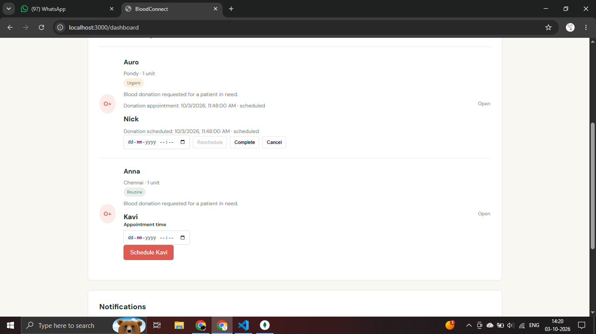
Purpose
After a donor accepts a blood request, the hospital can schedule an appointment with the donor.
How It Works
The hospital selects the accepted donor and enters the required appointment information such as date, time and related details.
Technical Flow
Hospital → Select Accepted Donor → Enter Appointment Details → POST /api/appointments → Validation → MongoDB
Concepts Used
- Controlled Form
- useState
- fetch()
- POST API
- Authentication
- Authorization
- Mongoose
9.2 Appointment Data Entry
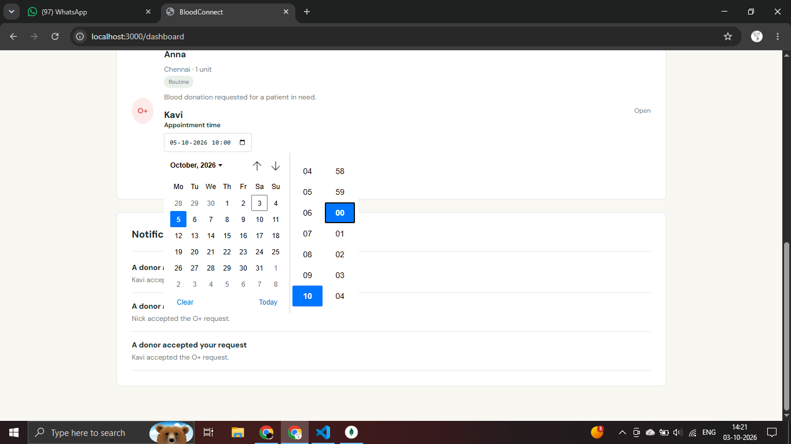
Purpose
This screen shows the hospital entering the appointment details for the selected donor.
How It Works
The appointment form collects the required scheduling information. After submission, the information is sent to the appointment API.
Concepts Used
- Form Handling
- React State
- Event Handling
- API Communication
- Validation
9.3 Hospital Dashboard After Scheduling
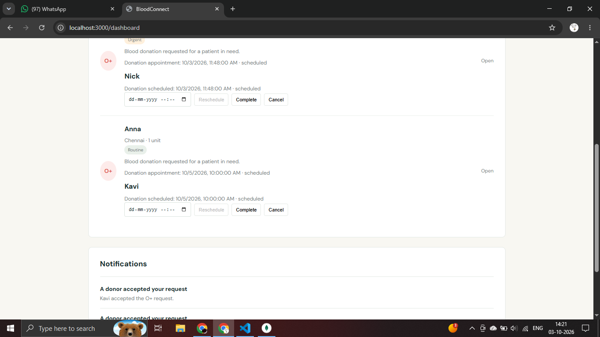
Purpose
After successful scheduling, the hospital dashboard displays the updated appointment information.
How It Works
The appointment is stored in MongoDB. The dashboard retrieves the updated appointment information and displays it to the hospital.
Technical Flow
Appointment Created → MongoDB → GET /api/appointments → Hospital Dashboard
Concepts Used
- GET API
- POST API
- MongoDB
- Mongoose
- React State
- Data Refresh
10. Donor Appointment and Notification
10.1 Donor Dashboard After Scheduling
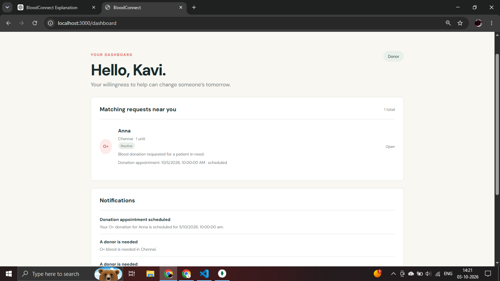
Purpose
After the hospital schedules the donation appointment, the donor can see the updated appointment information on the donor dashboard.
How It Works
The appointment is stored in MongoDB and is associated with the donor. The donor dashboard retrieves the appointment information through the backend API.
Technical Flow
Hospital Schedules Appointment → MongoDB → Appointment API → Donor Dashboard
Concepts Used
- API Data Fetching
- React Components
- MongoDB
- Mongoose
- Authentication
10.2 Donor Appointment Notification
Purpose
The donor is notified when the hospital schedules the donation appointment.
How It Works
The backend creates a notification for the donor after the appointment is successfully scheduled. The donor dashboard displays the notification.
Concepts Used
- Notification System
- MongoDB
- API Communication
- React Rendering
11. Donation Completion
11.1 Donor Side After Completed Donation
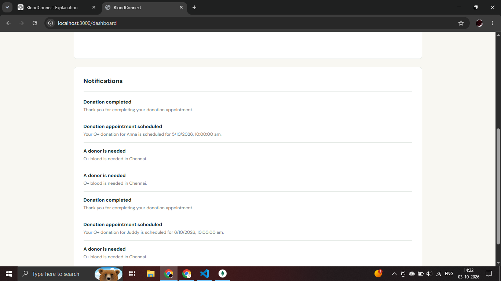
Purpose
This screen shows the donor after the donation appointment has been completed.
How It Works
When the hospital marks the appointment as completed, the appointment status becomes completed and the associated blood request is marked as fulfilled.
Technical Flow
Hospital Marks Donation Complete → PATCH /api/appointments/[id] → Appointment = Completed → BloodRequest = Fulfilled → Donor Notification → History
Concepts Used
- PATCH API
- Database Update
- Status Management
- MongoDB
- Mongoose
- Notifications
11.2 Donor History
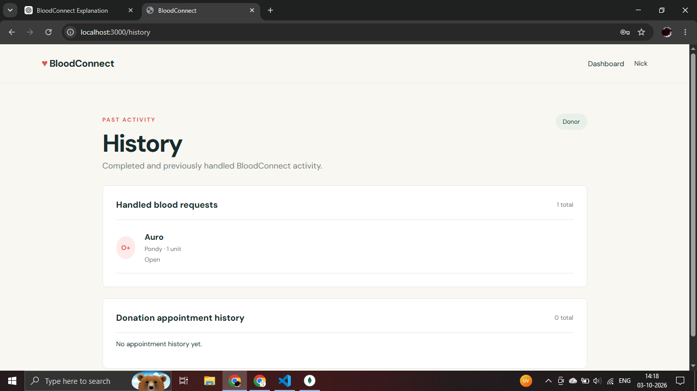
Purpose
The donor history page provides information about previous donation activities.
How It Works
Completed donation and appointment information is retrieved from the database and displayed as historical records.
Concepts Used
- GET API
- Data Filtering
- Array Mapping
- MongoDB
- React Components
12. Donor History and Records
BloodConnect maintains historical information so that donors can review their previous blood donation activities.
12.1 Donor History Screen
Purpose
This page provides a record of completed donation activities and related appointment information.
Concepts Used
- Database Queries
- Filtering
- Conditional Rendering
- React Components
- MongoDB
13. Hospital History
Purpose
The hospital history section allows hospitals to review previously created blood requests and completed donation activities.
How It Works
The application retrieves relevant request and appointment records and displays completed or previous activities to the hospital.
Concepts Used
- GET API
- MongoDB Queries
- Filtering
- Array Mapping
- React Components
14. Complete Application Workflow
15. Technical Request-Response Flow
BloodConnect follows a request-response architecture between the React user interface, Next.js Route Handlers and MongoDB.
Explanation
The React frontend collects user input or requests information from the server using fetch(). The request reaches a Next.js Route Handler. The backend verifies authentication and authorization, validates the data, performs database operations using Mongoose and communicates with MongoDB.
After the database operation is completed, the API returns a JSON response. React receives the response and updates the user interface.
16. Database
MongoDB is used as the database for BloodConnect. Mongoose is used to define schemas and interact with MongoDB collections.
16.1 Users Collection
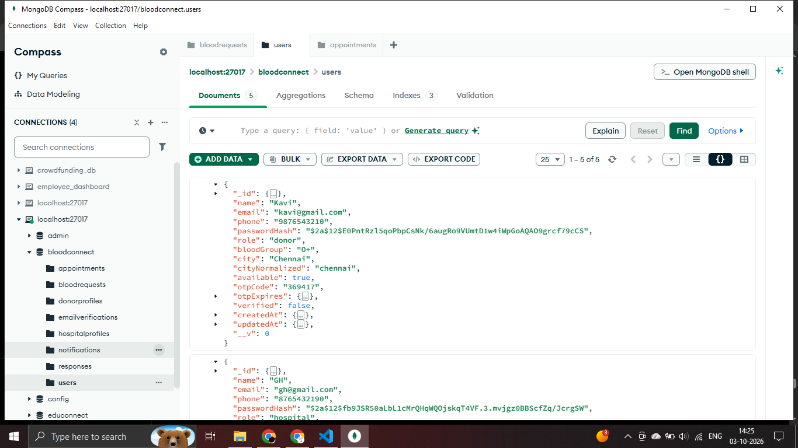
Purpose
The Users collection stores common account information such as user identity, email, role and password hash.
Concepts Used
- MongoDB Collection
- Mongoose Schema
- ObjectId
- Password Hashing
16.2 Donor Profile Collection
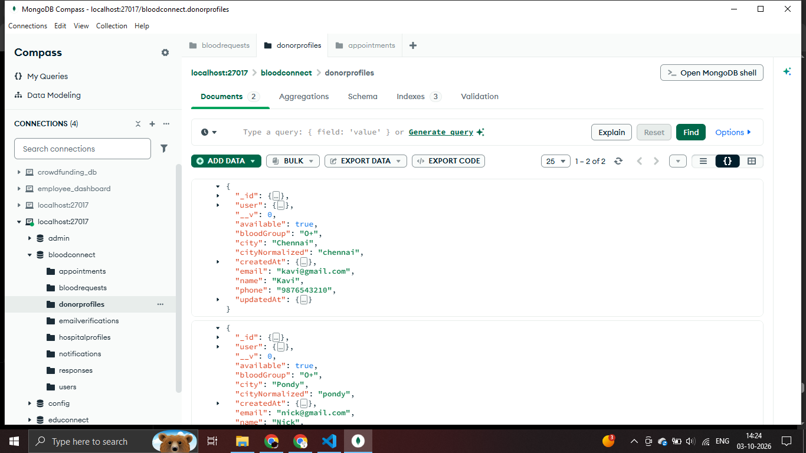
Purpose
The Donor Profile collection stores donor-specific information such as blood group, city and availability.
Concepts Used
- Mongoose Schema
- MongoDB ObjectId
- User Reference
- Blood Group
- Availability
16.3 Hospital Profile Collection
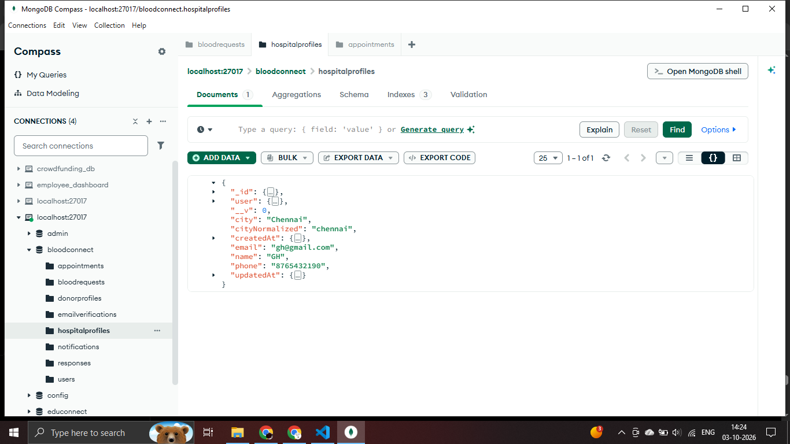
Purpose
The Hospital Profile collection stores hospital-specific information associated with a registered hospital user.
Concepts Used
- Mongoose Schema
- MongoDB ObjectId
- User Reference
- Hospital Information
16.4 Blood Request Collection
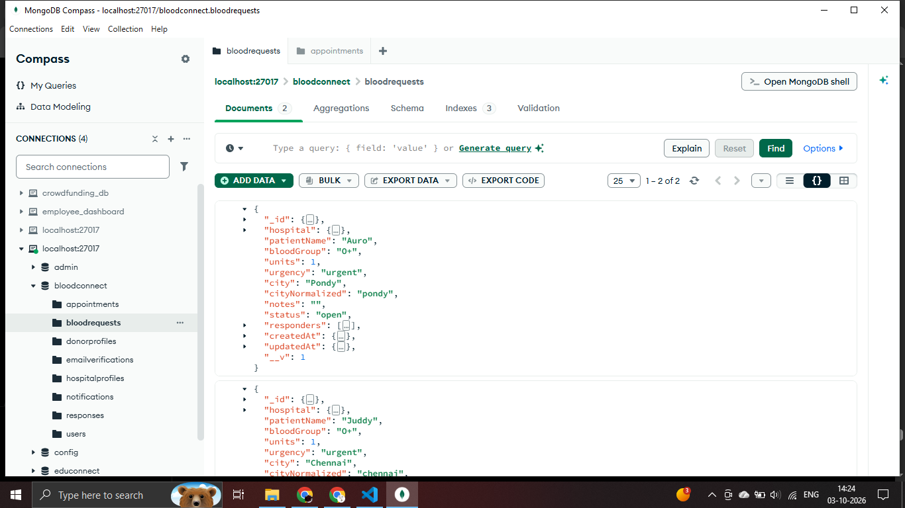
Purpose
The Blood Request collection stores blood requirements created by hospitals.
It contains information such as blood group, units, city, urgency, request status and donor responders.
Concepts Used
- Mongoose Schema
- ObjectId References
- Embedded Subdocuments
- Array Fields
- Status Management
16.5 Appointments Collection
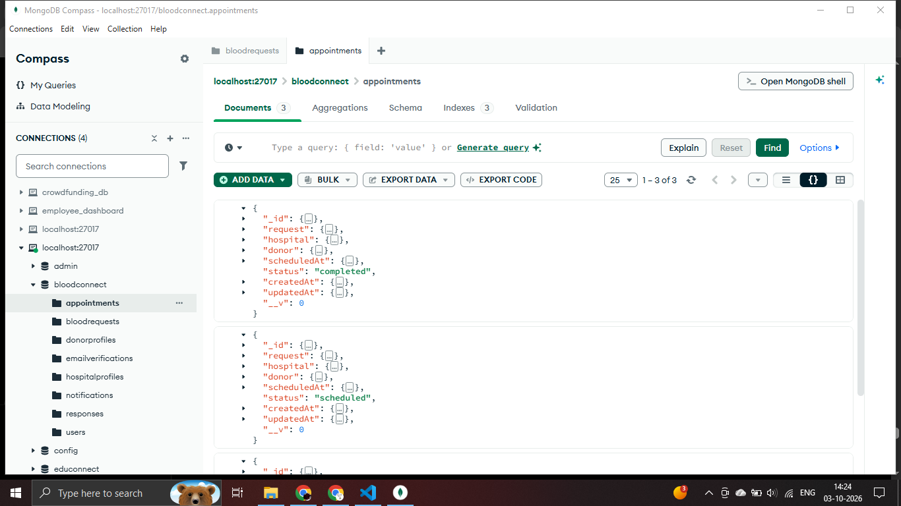
Purpose
The Appointments collection stores scheduled donation appointments between hospitals and donors.
Appointment Status
- Scheduled
- Rescheduled
- Cancelled
- Completed
Concepts Used
- Mongoose Schema
- References
- Date and Time Data
- Status Management
16.6 Notifications Collection
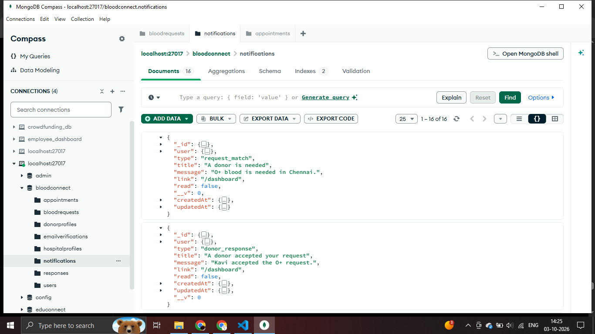
Purpose
The Notifications collection stores notifications generated by the system for donors and hospitals.
Examples
- Matching blood request
- Donor accepted request
- Appointment scheduled
- Donation completed
Concepts Used
- MongoDB Collection
- Mongoose
- User References
- Notification System
17. Database Relationship Overview
The main entities in the BloodConnect database are connected through MongoDB ObjectId references and embedded documents.
Important Database Concepts
- MongoDB Collections
- Mongoose Schemas
- Mongoose Models
- ObjectId
- References
- Embedded Documents
- populate()
- Database Queries
- Database Updates
18. Authentication and Authorization
Authentication
Authentication verifies the identity of a user. BloodConnect uses email and password authentication.
Passwords are not stored directly. They are hashed using bcryptjs before being stored in MongoDB.
Session Management
After successful login, BloodConnect creates a signed session and stores it in an HTTP-only cookie.
Because the cookie is HTTP-only, client-side JavaScript cannot directly access it.
Authorization
Authorization determines what an authenticated user is allowed to do.
For example, a hospital can create a blood request, while a donor can respond to a blood request.
Concepts Used
- Authentication
- Authorization
- bcryptjs
- Signed Cookies
- Sessions
- Role-based Access
19. API Endpoints
| Method | Endpoint | Purpose |
|---|---|---|
| POST | /api/auth/register | Register a new user |
| POST | /api/auth/login | Authenticate user |
| POST | /api/auth/logout | Logout user |
| GET | /api/auth/me | Get current authenticated user |
| GET | /api/requests | Retrieve blood requests |
| POST | /api/requests | Create blood request |
| POST | /api/requests/[id]/respond | Respond to a blood request |
| GET | /api/appointments | Retrieve appointments |
| POST | /api/appointments | Create appointment |
| PATCH | /api/appointments/[id] | Reschedule, cancel or complete appointment |
| GET | /api/notifications | Retrieve notifications |
| GET | /api/profiles | Retrieve profile information |
20. Programming and Development Concepts Used
Frontend Concepts
- React Components
- Client Components
- useState
- useEffect
- Controlled Forms
- Event Handling
- Conditional Rendering
- Array map()
- Array filter()
- Array find()
- fetch()
- Async/Await
- Promises
- try/catch
- Destructuring
- Spread Operator
- Optional Chaining
- Ternary Operator
Next.js Concepts
- App Router
- File-based Routing
- Route Groups
- Dynamic Routes
- Route Handlers
- API Routes using app/api
- Client Components
- Server-side functionality
Backend Concepts
- REST-style APIs
- HTTP Methods
- Request and Response
- JSON
- Validation
- Authentication
- Authorization
- Error Handling
Database Concepts
- MongoDB
- Collections
- Documents
- Mongoose
- Schemas
- Models
- ObjectId
- References
- populate()
- Queries
- Updates
Security Concepts
- Password Hashing
- bcryptjs
- Signed Sessions
- Role-based Authorization
21. Security Features
Several security practices are implemented in BloodConnect to protect user accounts and API operations.
- Passwords are hashed using bcryptjs instead of storing plain-text passwords.
- Authentication sessions are stored using signed HTTP-only cookies.
- Protected APIs verify whether the user is authenticated.
- Role-based authorization prevents users from performing actions that belong to another role.
- Database connection information and secrets are stored using environment variables.
22. Current Limitations
The current version of BloodConnect has some functionality that can be improved in future versions.
- OTP generation exists, but OTP verification is not implemented.
- A notification read/mark-as-read API is not currently implemented.
- Profile editing functionality can be expanded.
- Additional production-level security features such as rate limiting can be added.
- The history API can be further centralized instead of retrieving historical information through other APIs.
23. Conclusion
BloodConnect provides a digital platform for coordinating blood donation requirements between hospitals and donors.
The application allows hospitals to create blood requests and identify matching donors based on blood group, city and availability. Donors can receive notifications, respond to requests and participate in scheduled donation appointments.
The system manages the complete workflow from creating a blood request to donor response, appointment scheduling and donation completion.
The project demonstrates the use of Next.js, React, MongoDB, Mongoose, REST-style API development, authentication, authorization, database operations, notifications and responsive web design in a full-stack application.